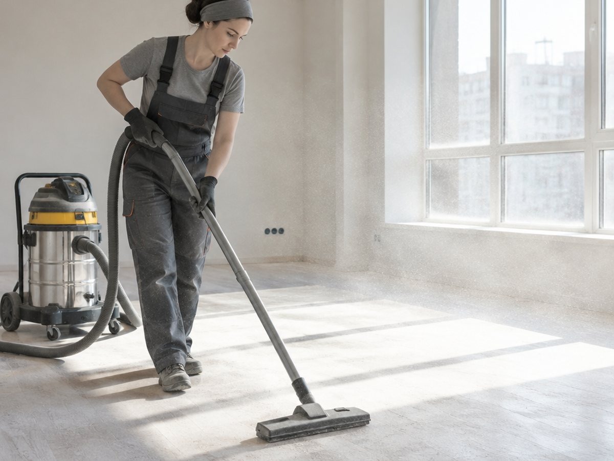
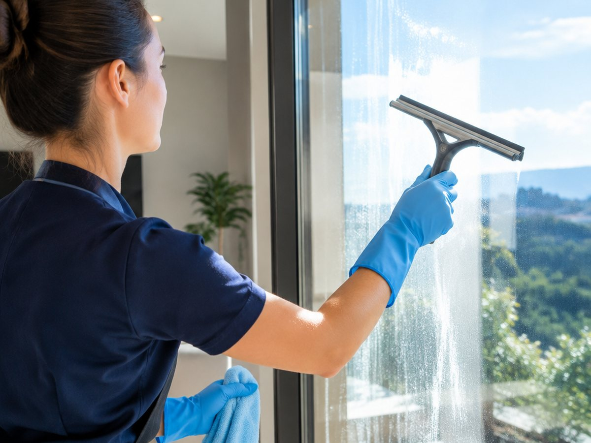

Что входит в каждый вид уборки
Шесть форматов — от регулярного порядка до уборки после ремонта. Состав работ всегда согласуем заранее: что важно именно вам.

Регулярная чистота
Уборка, которая поддерживает порядок в доме: приезжаю по графику и делаю то, что нужно, чтобы вы не думали о пыли и посуде.
Можно раз в неделю, раз в две недели или под конкретный день — обсудим, как удобнее.
Глубокая уборка всех уголков
Там, где поддерживающей уборки мало: труднодоступные места, двери, плинтусы, техника.
| Зона | Что делаю |
|---|---|
| Комнаты | Пыль со всех поверхностей, включая труднодоступные места, плинтусы, двери и подоконники; полы и ковры |
| Кухня | Фасады, столы, плитка, вытяжка снаружи, бытовая техника снаружи, мойка |
| Санузел | Плитка, сантехника, зеркала, удаление налёта, дезинфекция поверхностей |
| Окна и балкон | Стёкла и рамы изнутри, подоконники, балконное остекление |

Строительная пыль и следы работ
После ремонта пыль лежит везде: на полках, в шкафах, на рамах и светильниках. Убираю последовательно, сверху вниз, чтобы пыль не оседала заново.
Убираю следы краски, клея и затирки с поверхностей, мою окна и рамы, полы и плитку. Работаю с профессиональным оборудованием, включая сбор мелкой пыли.
Мытьё окон без разводов
Стёкла, рамы, подоконники и балконное остекление — внутри и снаружи, где есть безопасный доступ.
Что входит
- стёкла с двух сторон
- рамы и створки
- подоконники
- откосы
- балконное остекление
- сетки и жалюзи по договорённости

До и после переезда
Подготовить помещение к новоселам или сдать квартиру после выезда — две разные задачи, обе решаются.
Уборка пустого помещения: шкафы внутри, полы, санузел, окна — чтобы заезжать в чистоту.
Финальная уборка перед сдачей квартиры: без следов мебели, пыли и разводов.
Внутренние поверхности, где обычно копится пыль.
Комнаты, кухня, санузел, балкон — по согласованному списку.
Гипоаллергенные средства
Уборка с использованием гипоаллергенных средств — для заботы о здоровье и окружающей среде. Без резких запахов и агрессивной химии.
Подходит, если в доме дети, животные или чувствительность к бытовой химии.

Не выбрали вид уборки?
Опишите ситуацию: сколько комнат, что случилось, что важно. Подскажу формат и назову стоимость.
Консультация бесплатная — можно просто позвонить.
Заявка на уборку
Опишите помещение — назову стоимость и время. Консультация бесплатная.
Чистота и порядок — это легко
Расскажите про помещение: сколько комнат, что нужно сделать и когда удобно. Назову стоимость, согласуем время и приеду с оборудованием и средствами.